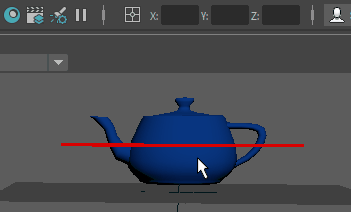
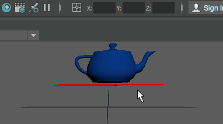

可以通过选择对象并在“通道盒”(Channel Box)的一个轴中输入 180，使对象在相应轴上旋转 180 度来翻转该对象。
另一种翻转方法是使用“比例”，即在状态行（工具栏）右端输入框的一个轴中输入 -1 值。按 1 缩放对象不会更改其大小，按 -1 缩放对象会使其大小保持不变但方向相反。


在一个或多个方向上以负数量缩放对象的效果等同于绕对象的轴翻转对象。
- 选择要翻转的对象，然后单击“缩放工具”(Scale Tool)（或按 R）。
- 在状态行（工具栏）右端的输入框中，单击文本框旁边的图标，然后选择“相对变换”(Relative Transform)。
 注： “相对变换”(Relative Transform)会参照对象的当前位置移动对象，而“绝对变换”(Absolute Transform)参照场景的原点移动对象或组件。（如果选择“绝对变换”(Absolute Transform)，请确保对象的比例变换值已冻结（或设置为 1），因为在输入框中输入这些值会将其重置。）
注： “相对变换”(Relative Transform)会参照对象的当前位置移动对象，而“绝对变换”(Absolute Transform)参照场景的原点移动对象或组件。（如果选择“绝对变换”(Absolute Transform)，请确保对象的比例变换值已冻结（或设置为 1），因为在输入框中输入这些值会将其重置。） - 在要绕其翻转对象的轴对应的文本框中，为该轴键入 -1。
例如，要绕 Y 翻转对象，键入 -1。要绕 X 和 Z 翻转对象，在 X 和 Z 文本框中键入 -1。
- 按 Enter 键。